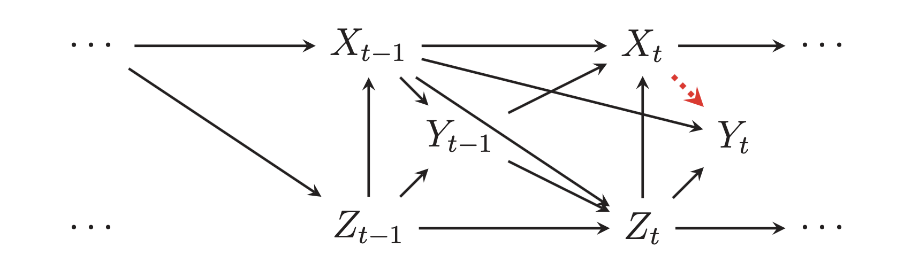

Generating inverse probability weights for marginal structural models with time-series cross-sectional panel data
In my post on generating inverse probability weights for both binary and continuous treatments, I mentioned that I’d eventually need to figure out how to deal with more complex data structures and causal models where treatments, outcomes, and confounders vary over time. Instead of adjusting for DAG confounding with inverse probability weights, we need to use something called marginal structural models (MSMs) to make adjustments that account for treatment and outcome history and other time structures. This is complex stuff and social science hasn’t done much with it (but it’s been a common approach in epidemiology).
This post is my first attempt at teaching myself how to do this stuff. As I note at the end in the caveats section, there might be (surely are!) mistakes. Please correct them!
Contents
- DAGs and time-series cross-sectional (TSCS) data
- Marginal structural models
- Simulated time-series cross-sectional data
- Marginal structural model with a binary treatment
- Marginal structural model with a continuous treatment
- Important caveats!
library(tidyverse)
library(lme4) # For mixed models
library(fixest) # For fixed effects models
library(broom)
library(broom.mixed) # For tidying mixed models
library(ggdag)
library(dagitty)
library(ipw)
DAGs and time-series cross-sectional (TSCS) data
Let’s pretend that we’re interested in the causal effect of a policy in a country on a country’s happiness. We’ll work with two different policies: whether a country implements a 6-hour workday (like Finland has been considering), which is binary, and the number of mandated vacation days a country provides, which is continuous. Both the policy and national happiness are influenced and confounded by a few different variables: general country-specific trends, GDP per capita, level of democratization, and level of political corruption.
In the absence of time, this causal model is fairly straightforward:
simple_dag <- dagify(happiness ~ policy + gdp_cap + democracy + corruption + country,
policy ~ gdp_cap + democracy + corruption + country,
coords = list(x = c(policy = 1, happiness = 5, gdp_cap = 2,
democracy = 3, corruption = 4, country = 3),
y = c(policy = 2, happiness = 2, gdp_cap = 3,
democracy = 3.3, corruption = 3, country = 1)),
exposure = "policy",
outcome = "happiness")
ggdag_status(simple_dag, text_col = "black") +
guides(color = FALSE) +
theme_dag()

In a regular DAG setting, we can isolate the arrow between policy and happiness by statistically adjusting for all the nodes that open up backdoor relationships between them, or confound them. We can use do-calculus logic for that, or we can use R:
adjustmentSets(simple_dag)
## { corruption, country, democracy, gdp_cap }
Adjusting for the four confounders here is thus sufficient for closing all the backdoors and isolating the causal effect of the policy on national happiness. A standard approach to this kind of adjustment is inverse probability weighting, and I have a whole post about how to do that with both binary and continuous treatments (as well as another post and a textbook chapter with even more details and examples).
However, in reality, time also influences policies, happiness, and other confounders. The number of vacation days a country offers in 2019 depends a lot on the number of vacation days offered in 2018, and 2017, and 2016, and so on. Also, a country’s GDP, level of democracy, and level of corruption all depend on earlier values. Countries aren’t just getting random levels of democracy each year! Not all confounders vary with time—country remains the same every year, as do things like region and continent.
On top of all that, happiness in a previous year could influence the policy in the current year. If a country has lower aggregate happiness in 2016, that could influences politicians’ choice to mandate a 6-hour workday or increase vacation days in 2017 or 2018.
We need to incorporate time into our simple DAG. Because we’re adding a bunch more nodes, I’m going to collapse the time-varying confounders (GDP per capita, democracy, and corruption) and time-invariant confounders (just country here) into single separate nodes. To account for time, I add \(t\) subscripts: \(t\) represents the current year, \(t - 1\) (t_m1 in the graph) represents the previous year, \(t - 2\) represents two years earlier, and so on.
Here’s what this looks like:
time_dag <- dagify(happiness_t ~ policy_t + varying_confounders_t + happiness_tm1 + nonvarying_confounders,
policy_t ~ varying_confounders_t + happiness_tm1 + policy_tm1 + nonvarying_confounders,
varying_confounders_t ~ happiness_tm1 + varying_confounders_tm1 + nonvarying_confounders,
happiness_tm1 ~ policy_tm1 + varying_confounders_tm1 + nonvarying_confounders,
policy_tm1 ~ varying_confounders_tm1 + nonvarying_confounders,
varying_confounders_tm1 ~ nonvarying_confounders,
coords = list(x = c(happiness_t = 4, policy_t = 3, varying_confounders_t = 3,
happiness_tm1 = 2, policy_tm1 = 1, varying_confounders_tm1 = 1,
nonvarying_confounders = 2.5),
y = c(happiness_t = 3, policy_t = 2, varying_confounders_t = 4,
happiness_tm1 = 3, policy_tm1 = 2, varying_confounders_tm1 = 4,
nonvarying_confounders = 1)),
exposure = "policy_t",
outcome = "happiness_t")
ggdag_status(time_dag, text_col = "black") +
guides(color = FALSE) +
theme_dag()

Phew. That’s bananas. And that’s just for one time period. Technically there are also nodes from \(t - 2\) and \(t - 3\) and so on that influence \(t - 1\). Figure 2 from Blackwell and Glynn (2018) shows a similar structure with previous time periods (though they don’t have an arrow from \(Y_{t-1}\) to \(Y\)):

All we care about in this situation is the single arrow between policy_t and happiness_t. (There are ways of looking at other arrows, like the effect of policy_tm1 on happiness_t, but we won’t try to measure those here. Blackwell and Glynn (2018) show how to do that.)
We can use do-calculus logic to see what nodes need to be adjusted for to isolate that arrow:
adjustmentSets(time_dag)
## { happiness_tm1, nonvarying_confounders, varying_confounders_t }
According to this, we should adjust for time variant confounders in the current year, happiness in the previous year, and nonvarying confounders like country. However, this won’t be completely accurate because the previous history matters. In general, situations where treatments, confounders, and outcomes vary over time, adjustment approaches like inverse probability weighting will be biased and incorrect.
Marginal structural models
To account for this time structure, we can instead use something called marginal structural models (MSMs) to make DAG adjustments. These have been used widely in epidemiology, and there are some really great and accessible overviews of the method here:
- Chapter 12 in Miguel A. Hernán and James M. Robins, Causal Inference: What If (Hernán and Robins 2020)
- Felix Thoemmes and Anthony D. Ong, “A Primer on Inverse Probability of Treatment Weighting and Marginal Structural Models” (Thoemmes and Ong 2016)
- Stephen R. Cole and Miguel A. Hernán, “Constructing Inverse Probability Weights for Marginal Structural Models” (Cole and Hernán 2008)
- Kosuke Imai and Marc Ratkovic, “Robust Estimation of Inverse Probability Weights for Marginal Structural Models” (Imai and Ratkovic 2015)
- James M. Robins, Miguel Ángel Hernán, and Babette Brumback, “Marginal Structural Models and Causal Inference in Epidemiology” (Robins, Hernán, and Brumback 2000)
In my world of public policy and political science, though, MSMs are far rarer, even though tons of the data we use is time-series cross-sectional (TSCS) data, or panel data where each row represents a country and year (e.g. row 1 is Afghanistan in 2008, row 2 is Afghanistan in 2009, etc.) or state and year (e.g. Alabama 2015, Alabama 2016, etc.). The only paper I’ve really seen that uses MSMs in the political science world is Blackwell and Glynn (2018), which is an introduction to the topic and a call for using them more:
- Matthew Blackwell and Adam N. Glynn, “How to Make Causal Inferences with Time-Series Cross-Sectional Data under Selection on Observables,” (Blackwell and Glynn 2018)
The basic intuition behind MSMs is similar to simpler inverse probability weighting:
- Calculate weights using confounders and the time structure
- Calculate the average treatment effect using the weights and the time structure
The formula for calculating weights differs depending on if the treatment is binary or continuous, and they’re written slightly differently across those different resources listed above.
Here’s my version of how to calculate stabilized inverse probability weights with a binary treatment:
$$\text{Binary stabilized IPW}_{it} = \prod^t_{t = 1} \frac{P[X_{it} | \bar{X}_{i, t-1}, V_i]}{P[X_{it} | \bar{X}_{i, t-1}, Y_{i, t-1}, C_{it}, V_i]}$$
There are a ton of variables in this equation. Let’s go through them one at a time:
\(i\)stands for an individual (person, country, etc.)\(t\)stands for a time period (year, month, day, etc.)\(X\)stands for the observed treatment status;\(X_{it}\)stands for the observed treatment status of an individual at a given time. This is often written more specifically as\(X_{it} = x_{it}\)(see equation 1 in p. 46 in Thoemmes and Ong (2016), and the equation at the beginning of this tutorial here, for instance), but for simplicity I’ll just write it as\(X_{it}\).\(\bar{X}\)stands for the individual’s history of treatment assignment (e.g. all\(X\)values in previous time periods)\(Y\)stands for the outcome;\(Y_{it}\)stands for the outcome of an individual at a given time.\(C\)stands for time varying confounders; because these change over time,\(C\)gets a\(t\)subscript:\(C_{it}\)\(V\)stands for time invarying confounders; that’s why there’s no\(t\)in\(V_i\)- Finally
\(P[\cdot]\)stands for the probability distribution
Here’s a more human explanation:
- The numerator contains the probability of the observed treatment status ($X$) at each time given the previous history of treatment ($\bar{X}$) and time invariant confounders ($V_i$)
- The denominator contains the probability of the observed treatment status ($X$) at each time given the previous history of treatment ($\bar{X}$), previous outcomes ($Y_{i, t-1}$), time *varying* confounders ($C_{it}$) and time *invariant* confounders ($V_i$). The previous outcomes part ($Y_{i, t-1}$) is optional; if you think that the outcome’s previous values influence current values, and the DAG shows an arrow from
\(Y_{t-1}\)and\(Y_t\), include it.
Importantly, time varying confounders ($C_{it}$) are included in the denominator only, not the numerator. The lagged outcome ($Y_{i, t-1}$), if used, also only goes in the denominator.
Technically the numerator can just be 1 instead of the whole \(P[\cdot]\) thing, but that creates unstable weights. Using \(P[\cdot]\) in the numerator creates stabilized weights.
The equation for continuous weights looks really similar:
$$\text{Continuous stabilized IPW}_{it} = \prod^t_{t = 1} \frac{f_{X | \bar{X}, V}[(X_{it} | \bar{X}_{i, t-1}, V_i); \mu_1, \sigma^2_1]}{f_{X | \bar{X}, Y, C, V}[(X_{it} | \bar{X}_{i, t-1}, Y_{i, t-1}, C_{it}, V_i), \mu_2, \sigma^2_2]}$$
Yikes. This is looks really complicated (and it is!), but again we can separate it into individual parts:
\(X\),\(Y\),\(V\),\(C\),\(i\), and\(t\)are all the same as the binary version of the formula- The numerator is still the treatment, treatment history, and time invariant confounders
- The denominator is still the treatment, treatment history, previous outcome, time varying confounders, and time invariant confounders
- The
\(f_{\cdot}(\cdot)\)functions are new and stand for a probability density function with a mean of\(\mu\)and a variance of\(\sigma^2\)
That’s a ton of information and it’s all really abstract. Let’s try this out with some simulated data
Simulated time-series cross-sectional data
For this example, we’ll use some data I generated with the fabricatr package, which makes it really easy to build multilevel and nested structures like country- and year-level variables. The actual code to generate this is a little long, mostly because it’s heavily annotated and has a ton of intermediate variables. You can download the data here if you want to follow along with the rest of the code:
It contains a bunch of different columns:
country: The country name (generated as a pronouncable 5-letter sequence (proquint) with the ids package)year: The yearvacation_days: The number of mandated vacation days. This is a treatment variable.policy: An indicator for whether a country has passed a policy that mandates a 6-hour workday. This is another treatment variablehappiness_vacation: The level of happiness in a country, on a scale of 1–100 (more happiness = higher values). This is the outcome when usingvacation_daysas the treatment.happiness_policy: The level of happiness in a country. This is the outcome when usingpolicyas the treatment.log_populuation: Logged populationlog_gdp: Logged GDPgdp: GDPpopulation: Populationgdp_cap: GDP per capitalog_gdp_cap: Logged GDP per capitademocracy: The country’s level of democracy, on a scale of 1–100 (more democratic = higher values)corruption: The level of political corruption in a country, on a scale of 1–100 (more corrupt = higher values)lag_*: Lagged versions of a bunch of different columns
And here’s what the actual data looks like:
happiness_data <- read_csv("happiness_data.csv")
glimpse(happiness_data)
## Rows: 1,520
## Columns: 18
## $ country <chr> "Mimim", "Mimim", "Mimim", "Mimim", "Mimim", "Mimim", "M…
## $ year <dbl> 2010, 2011, 2012, 2013, 2014, 2015, 2016, 2017, 2018, 20…
## $ vacation_days <dbl> 12, 14, 16, 17, 18, 20, 21, 22, 24, 25, 9, 11, 13, 14, 1…
## $ policy <dbl> 0, 0, 0, 0, 1, 1, 1, 1, 1, 1, 0, 1, 1, 1, 1, 1, 1, 1, 1,…
## $ happiness_vacation <dbl> 43.2, 45.1, 52.7, 52.7, 53.5, 61.4, 63.1, 66.1, 71.4, 73…
## $ happiness_policy <dbl> 36.9, 40.6, 44.3, 46.3, 54.3, 58.4, 54.7, 59.1, 67.6, 59…
## $ log_population <dbl> 17.4, 17.4, 17.5, 17.5, 17.6, 17.6, 17.7, 17.7, 17.8, 17…
## $ log_gdp <dbl> 23.1, 23.2, 23.3, 23.4, 23.5, 23.6, 23.7, 23.8, 23.9, 24…
## $ gdp <dbl> 1.06e+10, 1.18e+10, 1.27e+10, 1.48e+10, 1.57e+10, 1.78e+…
## $ population <dbl> 36049651, 37745007, 39520093, 41378659, 43324629, 453621…
## $ gdp_cap <dbl> 293, 313, 321, 358, 361, 392, 434, 446, 483, 528, 5750, …
## $ log_gdp_cap <dbl> 5.68, 5.74, 5.77, 5.88, 5.89, 5.97, 6.07, 6.10, 6.18, 6.…
## $ democracy <dbl> 56.9, 59.8, 77.5, 71.0, 76.2, 83.1, 87.3, 92.2, 100.0, 9…
## $ corruption <dbl> 63.4, 62.9, 62.0, 60.7, 61.9, 60.4, 60.4, 57.9, 58.0, 58…
## $ lag_policy <dbl> 0, 0, 0, 0, 0, 1, 1, 1, 1, 1, 0, 0, 1, 1, 1, 1, 1, 1, 1,…
## $ lag_happiness_policy <dbl> 36.8, 36.9, 40.6, 44.3, 46.3, 54.3, 58.4, 54.7, 59.1, 67…
## $ lag_vacation_days <dbl> 12, 12, 14, 16, 17, 18, 20, 21, 22, 24, 9, 9, 11, 13, 14…
## $ lag_happiness_vacation <dbl> 41.5, 43.2, 45.1, 52.7, 52.7, 53.5, 61.4, 63.1, 66.1, 71…
We’ll use this data explore two different questions:
- Binary treatment: What is the effect of a 6-hour workday policy on national happiness?
- Continuous treatment: What is the effect of the number of mandated vacation days on national happiness?
Marginal structural model with a binary treatment
Before we do anything with the binary treatment, we need to filter the data a little. Because of the nature of the data, some of the fake countries never implement the policy and have all 0s in the policy column. Weird things happen with the math of logistic regression if there are countries that have all 0s or all 1s for the outcome, since it’s technically impossible to predict their outcomes. That’s why zero-one inflated beta (ZOIB) models or hurdle models are a thing—they’re two step models that first model if you do the policy at all, then model the probability of the policy if it does happen. Rather than deal with ZOIB stuff here, I made it so that all countries start with 0 for the policy (i.e. no country has the policy in the first year), and then here we filter out any countries that don’t ever implement the policy.
happiness_binary <- happiness_data %>%
group_by(country) %>%
mutate(never_policy = all(policy == 0)) %>%
ungroup() %>%
filter(!never_policy)
Naive estimate without weights
Before playing with MSMs, let’s look at what the effect of the policy is on happiness without doing any inverse probability weighting for DAG adjustment. This is what most political science and international relations and public policy papers do. This is what I did in my dissertation and what I’ve done in a bunch of working papers. The wrongness of this approach is why I’m writing this post :)
This is just a regular linear regression model. I could run it with lm(), but then a ton of country and year coefficients would be included by default in the results, so I use feols() from the delightful fixest package to include country and year as fixed effects. The results from feols() and lm() are identical here; feols() is cleaner and faster.
model_naive <- feols(happiness_policy ~ policy + log_gdp_cap + democracy +
corruption + lag_happiness_policy + lag_policy | country + year,
data = happiness_binary)
tidy(model_naive)
## # A tibble: 6 x 5
## term estimate std.error statistic p.value
## <chr> <dbl> <dbl> <dbl> <dbl>
## 1 policy 6.76 0.397 17.0 1.90e-58
## 2 log_gdp_cap 3.80 1.85 2.05 4.07e- 2
## 3 democracy 0.146 0.0218 6.71 3.01e-11
## 4 corruption -0.158 0.0252 -6.26 5.31e-10
## 5 lag_happiness_policy 0.172 0.0449 3.82 1.40e- 4
## 6 lag_policy -1.54 0.511 -3.01 2.66e- 3
According to this, implementing a 6-hour workday is associated with a 6.8-point increase in national happiness. This is wrong though! We need to generate and use time-adjusted inverse probability weights to adjust for these confounders.
Manual weights
We’ll follow this formula to use confounders and previous treatments and outcomes to generate stabilized weights:
$$\text{Binary stabilized IPW}_{it} = \prod^t_{t = 1} \frac{P[X_{it} | \bar{X}_{i, t-1}, V_i]}{P[X_{it} | \bar{X}_{i, t-1}, Y_{i, t-1}, C_{it}, V_i]}$$
The numerator predicts the treatment using the previous treatment and time invariant confounders. We’ll use logistic regression here, but I’m like 90% sure you can do fancier things like multilevel models or machine learning or Bayes stuff:
model_num <- glm(policy ~ lag_policy + country,
data = happiness_binary, family = binomial(link = "logit"))
The denominator predicts the treatment using time-varying confounders, previous outcome, previous treatment, and time invariant confounders. Again we’ll use logistic regression here, but you can probably do fancier stuff too:
# There's a warning that fitted probabiltiies of 0 or 1 occurred, likely because
# my data is too perfect. Oh well---we'll live with it.
model_denom <- glm(policy ~ log_gdp_cap + democracy + corruption +
lag_happiness_policy + lag_policy + country,
data = happiness_binary, family = binomial(link = "logit"))
# This also works if you use fixest::feglm() for country fixed effects
# model_denom <- feglm(policy ~ log_gdp_cap + democracy + corruption +
# lag_happiness_policy + lag_policy | country,
# data = happiness_binary, family = binomial(link = "logit"))
Finally we need to use the results from the numerator and denominator to construct the weights following the equation:
happiness_binary_weights <- happiness_binary %>%
# Propensity scores from the models
mutate(propensity_num = model_num$fitted.values,
propensity_denom = model_denom$fitted.values) %>%
# Probability of observed outcome
mutate(propensity_num_outcome = ifelse(policy == 1, propensity_num, 1 - propensity_num),
propensity_denom_outcome = ifelse(policy == 1, propensity_denom, 1 - propensity_denom)) %>%
# Numerator / denominator
mutate(weights_no_time = propensity_num_outcome / propensity_denom_outcome) %>%
# Calculate the cumulative product of the weights within each country
group_by(country) %>%
mutate(ipw = cumprod(weights_no_time)) %>%
ungroup()
happiness_binary_weights %>%
select(country, year, policy, happiness_policy, ipw) %>%
head()
## # A tibble: 6 x 5
## country year policy happiness_policy ipw
## <chr> <dbl> <dbl> <dbl> <dbl>
## 1 Mimim 2010 0 36.9 0.800
## 2 Mimim 2011 0 40.6 0.640
## 3 Mimim 2012 0 44.3 0.516
## 4 Mimim 2013 0 46.3 0.486
## 5 Mimim 2014 1 54.3 0.116
## 6 Mimim 2015 1 58.4 0.116
Finally we’ll use those weights in a regression model to estimate the average treatment effect (ATE) of the policy on happiness. We need to use a model that accounts for the year and country panel structure for this. In every tutorial I’ve seen online, people use geeglm() from the geepack package, which lets you specify country and year dimensions in generalized estimating equations. These feel an awful lot like mixed models with random country/year effects. There’s some useful discussion and useful links about the differences between GEE models and multilevel models in this Twitter thread here. For the sake of this example, I’ll use multilevel models since I’m more familiar with them, and because you can build Bayesian ones with the brms package; I have yet to find a Bayesian flavor of GEEs.
In the outcome model, we include the previous treatment history and the invariant confounders (country, which I include as a random effect). To account for the time structure in the data, I also include a year random effect.
model_ate_binary <- lmer(happiness_policy ~ policy + lag_policy +
(1 | country) + (1 | year),
data = happiness_binary_weights, weights = ipw)
tidy(model_ate_binary, effects = "fixed")
## # A tibble: 3 x 5
## effect term estimate std.error statistic
## <chr> <chr> <dbl> <dbl> <dbl>
## 1 fixed (Intercept) 51.9 1.26 41.2
## 2 fixed policy 7.64 0.510 15.0
## 3 fixed lag_policy -1.30 0.448 -2.91
Voila! After adjusting for time-varying confounders and previous treatment history, the 6-hour workday policy causes an increase of 7.6 happiness points, on average. This is actually the effect that I built into the data. It worked!
However, I’m still not 100% confident that it did work. There are a lot of different moving parts here, and I’m not sure I have the right covariates in the right place (like in the outcome model, I’m fairly certain the model should be happiness_policy ~ policy + lag_policy, but I’m not sure).
Also the standard errors in this outcome model are wrong and have to be adjusted, either with fancy math or with bootstrapping (Blackwell and Glynn (2018) use boostrapping).
But still, this is really neat.
Weights with the ipw package
Instead of manually doing all the math to generate the weights, we can use the ipwtm() function from the ipw package to do it for us. We still specify a numerator and denominator, but the function takes care of the rest of the math. The numbers are the same.
# ipwtm() can't handle tibbles! Force the data to be a data.frame
weights_binary_ipw <- ipwtm(
exposure = policy,
family = "binomial",
link = "logit",
# Time invariant stuff
numerator = ~ lag_policy + country,
# All confounders
denominator = ~ log_gdp_cap + democracy + corruption +
lag_happiness_policy + lag_policy + country,
id = country,
timevar = year,
type = "all",
data = as.data.frame(happiness_binary)
)
# They're the same!
head(weights_binary_ipw$ipw.weights)
## [1] 0.800 0.640 0.516 0.486 0.116 0.116
head(happiness_binary_weights$ipw)
## [1] 0.800 0.640 0.516 0.486 0.116 0.116
This weights_binary_ipw object contains a bunch of other information too, but all we really care about here is what’s in the ipw.weights slot. We can add those weights as a column in a dataset and run the outcome model, which will give us the same ATE as before (unsurprisingly, since they’re identical). Technically we don’t need to add a new column with the weights—the model will work if they’re a standalone vector—but I don’t like mixing data frames and standalone vectors and prefer to keep everything in one nice object.
happiness_binary_ipw <- happiness_binary %>%
mutate(ipw = weights_binary_ipw$ipw.weights)
model_ate_binary_ipw <- lmer(happiness_policy ~ policy + lag_policy +
(1 | country) + (1 | year),
data = happiness_binary_ipw, weights = ipw)
tidy(model_ate_binary_ipw, effects = "fixed")
## # A tibble: 3 x 5
## effect term estimate std.error statistic
## <chr> <chr> <dbl> <dbl> <dbl>
## 1 fixed (Intercept) 51.9 1.26 41.2
## 2 fixed policy 7.64 0.510 15.0
## 3 fixed lag_policy -1.30 0.448 -2.91
Marginal structural model with a continuous treatment
Here our main question is what the causal effect of mandated vacation time is on national happiness. This treatment is continuous—days of vacation. We don’t need to worry about having all 1s or all 0s and worry about zero-one inflated models or anything, since the treatment varies a lot across all countries and years.
Naive estimate without weights
As before, we’ll look at the effect of vacation time is on happiness without any weights. Again, this is the approach in like a billion political science papers.
model_naive <- feols(happiness_vacation ~ vacation_days + log_gdp_cap + democracy +
corruption + lag_happiness_vacation + lag_vacation_days | country + year,
data = happiness_data)
tidy(model_naive)
## # A tibble: 6 x 5
## term estimate std.error statistic p.value
## <chr> <dbl> <dbl> <dbl> <dbl>
## 1 vacation_days 2.12 0.129 16.4 1.85e-55
## 2 log_gdp_cap 1.35 0.226 5.98 2.83e- 9
## 3 democracy 0.0516 0.0156 3.31 9.63e- 4
## 4 corruption -0.0624 0.0224 -2.78 5.48e- 3
## 5 lag_happiness_vacation 0.559 0.148 3.76 1.74e- 4
## 6 lag_vacation_days -1.35 0.382 -3.54 4.13e- 4
Here we see that an additional day of vacation is associated with a 2.1-point increase in national happiness. Once again, this is wrong and biased, since there’s no weighting adjustment that deals with time-based confounding.
Manual weights
We’ll follow the formula for continuous stabilized weights:
$$\text{Continuous stabilized IPW}_{it} = \prod^t_{t = 1} \frac{f_{X | \bar{X}, V}[(X_{it} | \bar{X}_{i, t-1}, V_i); \mu_1, \sigma^2_1]}{f_{X | \bar{X}, Y, C, V}[(X_{it} | \bar{X}_{i, t-1}, Y_{i, t-1}, C_{it}, V_i), \mu_2, \sigma^2_2]}$$
The numerator predicts the treatment using the previous treatment and time invariant confounders. We’ll use regular old linear regression here, but again, I’m like 90% sure you can do fancier things like multilevel models or machine learning or Bayes stuff:
model_num <- lm(vacation_days ~ lag_vacation_days + country,
data = happiness_data)
# This multilevel model works too
# model_num <- lmer(vacation_days ~ lag_vacation_days + (1 | country),
# data = happiness_data)
# Calculate the probability distribution
num <- dnorm(happiness_data$vacation_days,
predict(model_num),
sd(residuals(model_num)))
The denominator predicts the treatment using time-varying confounders, previous outcome, previous treatment, and time invariant confounders. Again we’ll use linear regression, but you can probably do fancier stuff too:
model_denom <- lm(vacation_days ~ log_gdp_cap + democracy + corruption +
lag_happiness_vacation + lag_vacation_days + country,
data = happiness_data)
# This multilevel model works too
# model_denom <- lmer(vacation_days ~ log_gdp_cap + democracy + corruption +
# lag_happiness_vacation + lag_vacation_days + (1 | country),
# data = happiness_data)
# Calculate the probability distribution
den <- dnorm(happiness_data$vacation_days,
predict(model_denom),
sd(residuals(model_denom)))
Finally we need to use the results from the numerator and denominator to build the inverse weights and calculate the cumulative product over time within each country:
# Finally, we make actual IPW weights by building the fraction
happiness_data_weights <- happiness_data %>%
mutate(weights_no_time = num / den) %>%
group_by(country) %>%
mutate(ipw = cumprod(weights_no_time)) %>%
ungroup()
happiness_data_weights %>%
select(country, year, vacation_days, happiness_vacation, ipw) %>%
head()
## # A tibble: 6 x 5
## country year vacation_days happiness_vacation ipw
## <chr> <dbl> <dbl> <dbl> <dbl>
## 1 Mimim 2010 12 43.2 0.142
## 2 Mimim 2011 14 45.1 1.50
## 3 Mimim 2012 16 52.7 1.13
## 4 Mimim 2013 17 52.7 0.941
## 5 Mimim 2014 18 53.5 0.838
## 6 Mimim 2015 20 61.4 0.457
Now we can use the weights to find the ATE, just like we did with the binary version. Again, I’m using a multilevel model instead of a GEE model, which I think is theoretically fine and legal.
model_ate <- lmer(happiness_vacation ~ vacation_days + lag_vacation_days +
(1 | country) + (1 | year),
data = happiness_data_weights, weights = ipw)
tidy(model_ate, effects = "fixed")
## # A tibble: 3 x 5
## effect term estimate std.error statistic
## <chr> <chr> <dbl> <dbl> <dbl>
## 1 fixed (Intercept) 23.4 1.82 12.9
## 2 fixed vacation_days 3.48 0.0908 38.4
## 3 fixed lag_vacation_days -1.19 0.0957 -12.4
After correctly adjusting for all the time-varying confounding, the causal effect of an additional vacation day is 3.48 happiness points, which is bigger than the naive estimate of 2.1 that we found earlier.
HOWEVER, this isn’t what I built into the data?? In the simulated data, I made the vacation effect be 1.7. So either I did the simulation wrong and built the effect incorrectly and it’s not actually 1.7, or I’m misspecifying the model here. I’m pretty sure that the weights themselves are fine and correct—I copied the equation and code directly from Blackwell and Glynn (2018)’s replication data, and the weights and ATE are basically the same when using ipwtm(). I don’t know what’s going on. :(
Weights with the ipw package
It’s also possible to use the ipwtm() function with continuous weights, but it runs incredibly slowly since it uses geeglm() behind the scenes to build the weights.
# This takes forever! like multiple minutes
weights_ipw_continuous <- ipwtm(
exposure = vacation_days,
family = "gaussian",
corstr = "ar1",
numerator = ~ lag_vacation_days + country, # Time invariant stuff
denominator = ~ log_gdp_cap + democracy + corruption +
lag_happiness_vacation + lag_vacation_days + country, # All confounders
id = country,
timevar = year,
type = "all",
data = as.data.frame(happiness_data)
)
Because it uses GEE models for the numerator and denominator and accounts for autoregressive time structures in the data (that’s what the costr = "ar1" argument is for), the weights are not exactly the same as the ones we found using manual math, but they’re super close:
# Pretty close!
head(weights_ipw_continuous$ipw.weights)
## [1] 0.142 1.505 1.126 0.941 0.838 0.457
head(happiness_data_weights$ipw)
## [1] 0.142 1.505 1.126 0.941 0.838 0.457
Finally we can use the weights to find the ATE. It’s basically identical to the effect we found with the manual math. (BUT STILL NOT 1.7 FOR WHATEVER REASON.)
happiness_ipw <- happiness_data %>%
mutate(ipw = weights_ipw_continuous$ipw.weights)
model_ate_ipw <- lmer(happiness_vacation ~ vacation_days + lag_vacation_days +
(1 | country) + (1 | year),
data = happiness_ipw, weights = ipw)
tidy(model_ate_ipw, effects = "fixed")
## # A tibble: 3 x 5
## effect term estimate std.error statistic
## <chr> <chr> <dbl> <dbl> <dbl>
## 1 fixed (Intercept) 23.4 1.82 12.9
## 2 fixed vacation_days 3.48 0.0908 38.4
## 3 fixed lag_vacation_days -1.19 0.0957 -12.4
Important caveats!
This is just a quick practical overview of how to actually build IPWs and use MSMs. I didn’t cover any of the math behind MSMs or the assumptions behind them, their limitations, diagnostics you should do, etc. Like, weights should generally have an average of 1 and not have values that are too extreme (and if values are too extreme, you can/should truncate them).
ALSO I likely have something wrong here. If so, let me know! Download the simulated data, play with it, fix the MSMs and weights, and tell me what’s wrong. Please!
Consult all these resources for better details about the mechanics of these models:
Blackwell, Matthew, and Adam N. Glynn. 2018. “How to Make Causal Inferences with Time-Series Cross-Sectional Data Under Selection on Observables.” American Political Science Review 112 (4): 1067–82. https://doi.org/10.1017/s0003055418000357.
Cole, Stephen R., and Miguel A. Hernán. 2008. “Constructing Inverse Probability Weights for Marginal Structural Models.” American Journal of Epidemiology 168 (6): 656–64. https://doi.org/10.1093/aje/kwn164.
Hernán, Miguel A., and James M. Robins. 2020. Causal Inference: What If. Boca Raton, Florida: Chapman and Hall / CRC. https://www.hsph.harvard.edu/miguel-hernan/causal-inference-book/.
Imai, Kosuke, and Marc Ratkovic. 2015. “Robust Estimation of Inverse Probability Weights for Marginal Structural Models.” Journal of the American Statistical Association 110 (511): 1013–23. https://doi.org/10.1080/01621459.2014.956872.
Robins, James M., Miguel Ángel Hernán, and Babette Brumback. 2000. “Marginal Structural Models and Causal Inference in Epidemiology.” Epidemiology 11 (5): 550–60. https://doi.org/10.1097/00001648-200009000-00011.
Thoemmes, Felix, and Anthony D. Ong. 2016. “A Primer on Inverse Probability of Treatment Weighting and Marginal Structural Models.” Emerging Adulthood 4 (1): 40–59. https://doi.org/10.1177/2167696815621645.